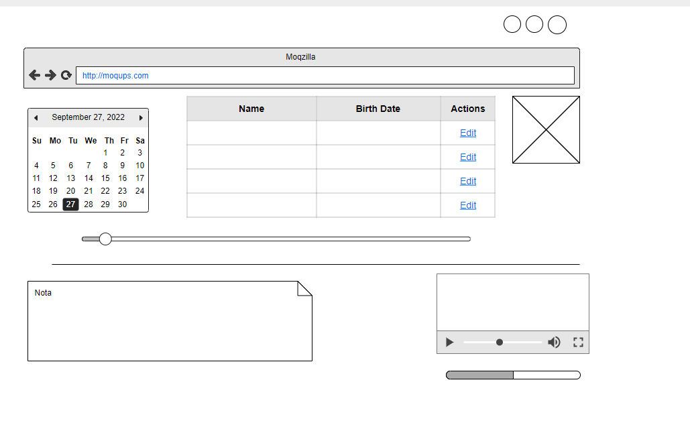

Proposito del sitio
Este sitio tiene como proposito promover el conocimiento parara crear paginas
web a traves del lenguaje HTML, fundamentos de HTML, interaccion Humano Ordenador.
Fundamentos HTML

Fundamentos de HTML es un lenguaje de marcas, sencillo pensado para el intercambio de informacion en la wwww,
este provee basicamente tres caracteristicas, estructura, estilo y funcionalidad para trabajar y crear
sitios web y aplicaciones con HTML, necesitamos saber primero como esa
estructura esta construida. crear fundamentos fuertes, estilos, formas, organizcion, y flexibilidad. a medida que se fueron
creando paginas web tambien se fueron añadiendo mas funciones.
Interacción Humano Ordenador

es la disciplina dedicada a diseñar, evaluar e implementar sistemas informaticos interactivos para el uso humano,
la interacción Humano es importantes por su seguridad, funcionalidad y usabilidad, estas caracteristicas son importantes
a la hora de investigar y comprender los factores organizacionales, socilaes y psicologicos que determinan
como las personas utilizan la tecnologia.
https://es.wikipedia.org/wiki/interacci%C3%B3n_persona-computadora
https://elibro-net.bibliotecavirtual.unad.edu.co/es/ereader/unad/56045
https://gutl.jovenclub.cu/wp-content/uploads/2013/10El+gran+libro+de+HTML5+CSS3+y+Javazcrip.pdf
Mockup

Skype: ira_lemo
email: iralema79@gmail.como
septiembre 27 de 2022